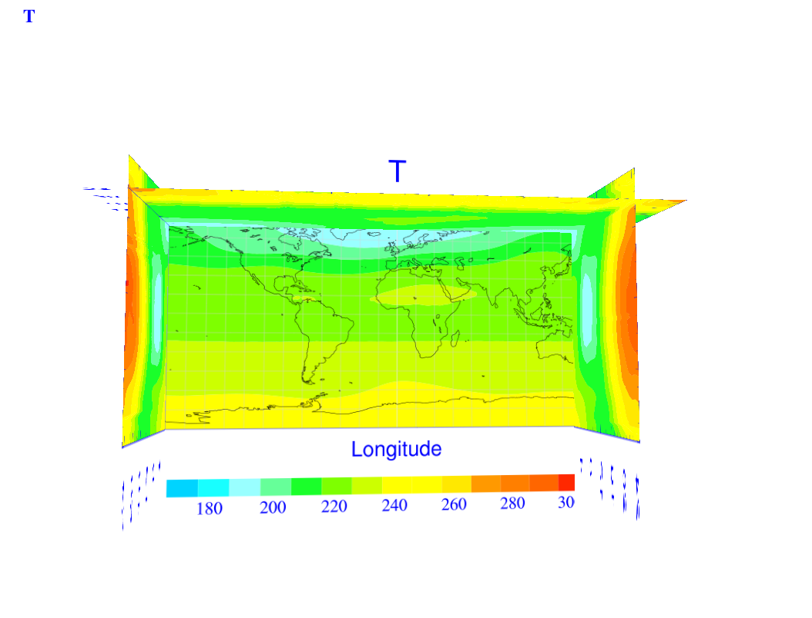
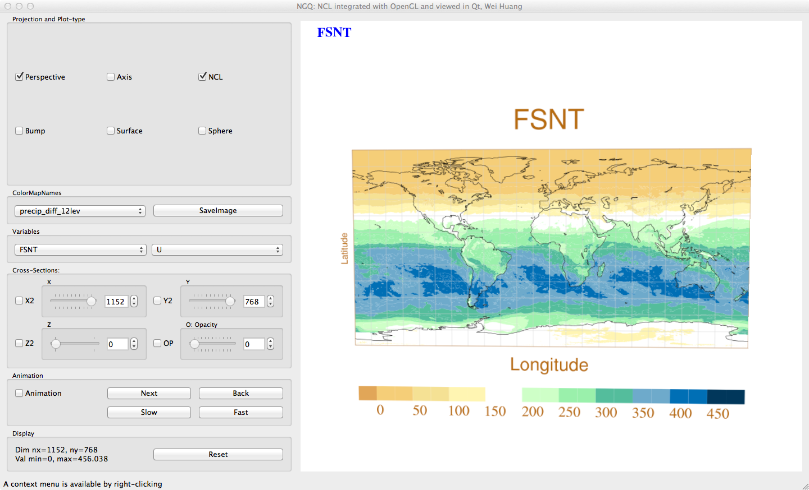
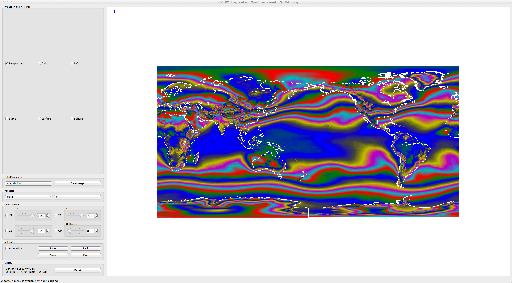
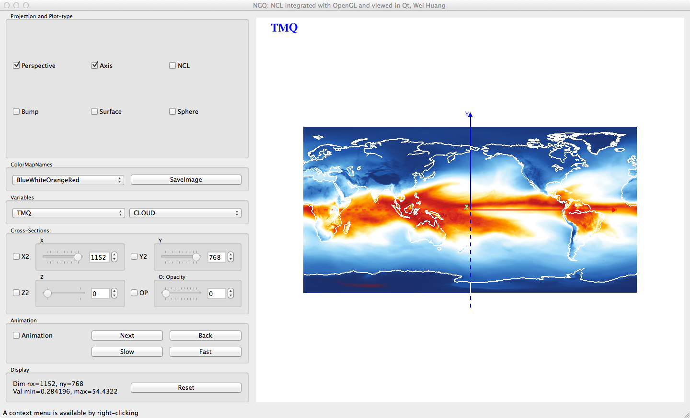

NV for CAM-FV
NV can view CAM-FV in two ways.
-
Display NCL images.
The images are generated from NCL,
but we can now rotate, zoom, and put cross sections together.
An image of cross-section of temperature.

An image of FSNT.

-
Display with OpenGL.
The images are generated from OpenGL, but can be viewed same
as from NCL.
An image of T.

An image of TMQ.
